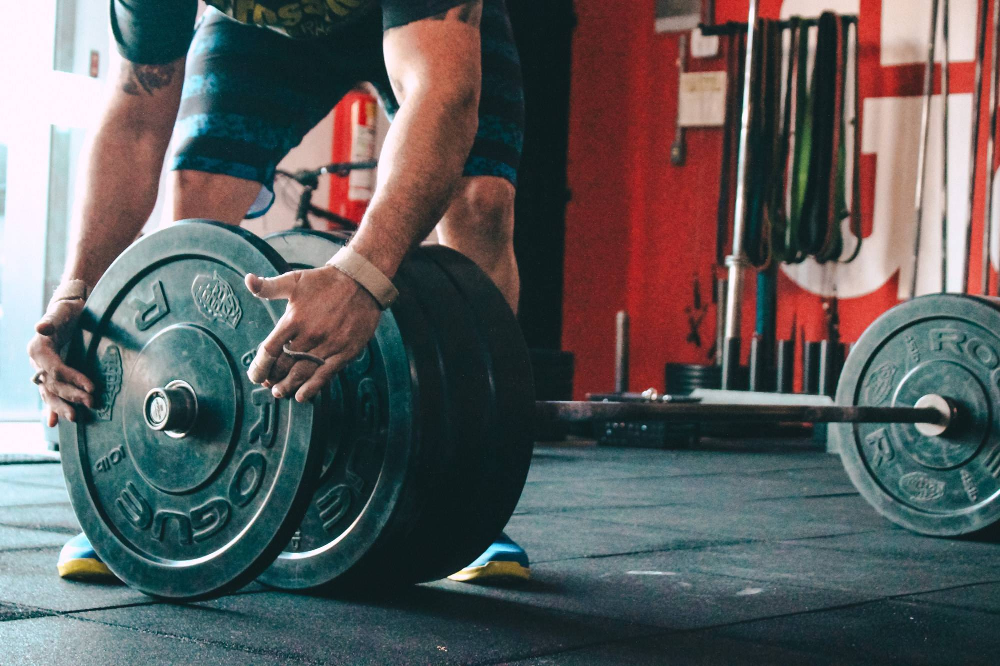
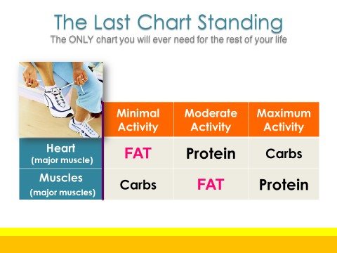

Believe it or not, men more than women, are plagued by body image concerns. In fact, body image dissatisfaction is a significant concern for males as young as 6 years old!
Men and boys tend to be preoccupied with the belief that their muscles need to be LARGER than life. Men tend to be obsessed with building muscle by shedding fat, eating more protein and loading up on creatine.
 Photo by Jesper Aggergaard on UnsplashWhen muscle dysmorphia was first described in the early 1990s, it was called "bigorexia," or "reverse anorexia."
In the book, "The Adonis Complex" the author points out that unlike earlier generations, today's men and boys are exposed to an explosion of advertising and action toys that idealize a super-muscular male body, Superman, Thor and Captain America just to name a few examples.
Recent studies have shown how Instagram and TikTok exercise videos are actually fueling more men's but also women's obsession with getting big muscles, big thighs, big butt or big breasts, BIGOREXIA.
 Chart by Dr. Colin Ross In my free E-Book, I illustrate how interval training is the physiological way to burn twice the body fat in 1/2 the time using the principle of "INTERVAL TRAINING". Once you understand interval training as illustrated by the chart your kidneys, heart and lungs will thank you for not flooding them with protein and creatinine in an attempt to get BIG!!!!